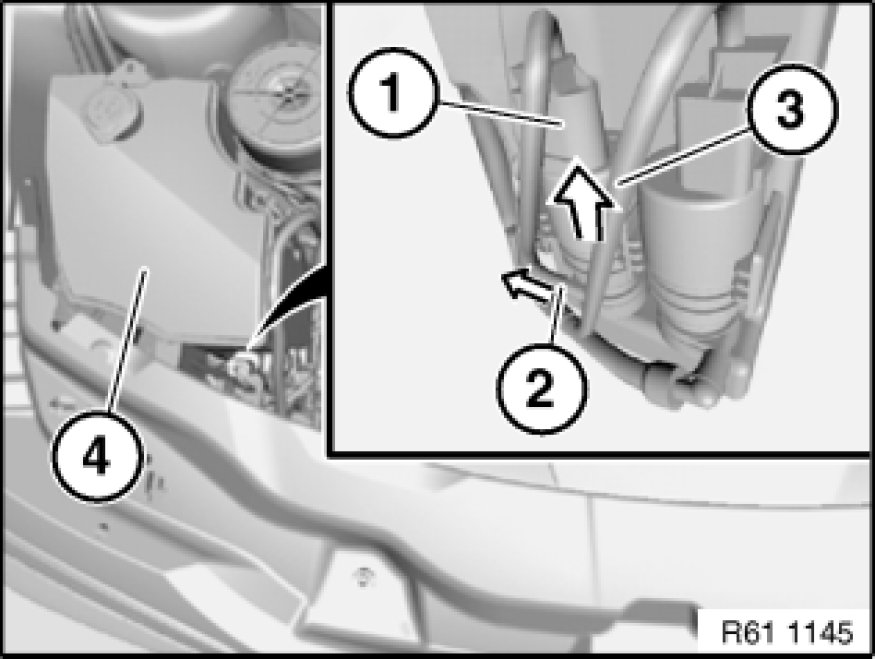

Removing and Installing/Replacing Windshield Washer Pump
61 71 100 - Removing and installing/replacing windshield washer pump

Note:
Drain washer fluid tank.

Unfasten plug connection (1) and disconnect.
Detach hose (2) in direction of arrow from windshield washer pump (3).
If necessary, turn window washer pump (3) and pull in direction of arrow out of washer fluid reservoir (4).
Installation:
Replace sealing ring of windshield washer pump.
Coat sealing ring of windshield washer pump with antiseize agent.
Ensure hose is laid without kinks.
Fill washer fluid reservoir.